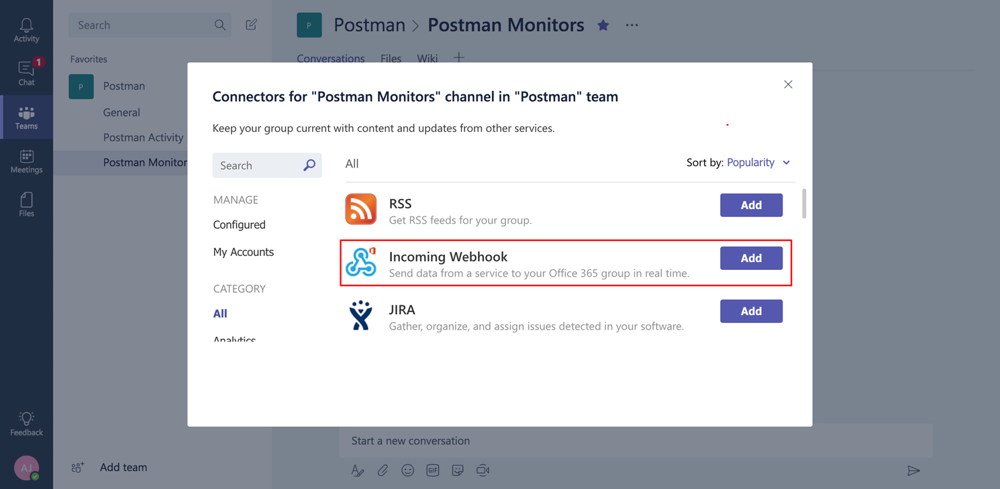

Alertmanager로 Prometheus의 알람을 Microsoft Teams에 발송하기
Alertmanager를 사용하면 Prometheus에서 발생한 알람을 이메일, Slack, SMS 등의 클라이언트에 발송할 수 있습니다. 하지만 필자가 일하는 회사에서는 Slack이 아니라 Microsoft Teams를 사용하고 있었습니다. Alertmanager에서는 이메일, HipChat, PagerDuty, Slack 등은 네이티브로 지원하지만 Microsoft Teams는 Webhook을 이용하여 써드파티 도구를 사용해야 합니다. 여기에서는 Kubernetes 클러스터 모니터링을 위해 Prometheus operator가 설치된 상황에서 Microsoft Teams로 알람을 수신하여 모니터링할 수 있는 환경을 구축해보겠습니다.
Microsoft Teams에서 Incoming Webhook URL 받기
여기에서는 Teams의 기본적인 내용은 스킵하고 채널에 Incoming Webhook을 구성하는 단계부터 설명하도록 하겠습니다.
먼저 알람을 받기 위한 채널에서 ... 을 클릭한 다음 커넥터를 선택합니다.
커넥터 리스트에서 Incoming Webhook 커넥터를 선택합니다.

나중에 webhook을 식별할 수 있도록 이름을 입력합니다. 그리고

“만들기” 버튼을 클릭하면 메시지를 이 채널에 게시하는데 사용될 수 있는 webhook URL이 생성됩니다. 이 URL을 잘 복사해둡니다.
Prometheus operator의 Alertmanager 설정
이제 Alertmanager에서 Microsoft Teams 서드파티 도구로 알람을 전송할 수 있도록 alertmanager.yaml 설정 파일을 생성합니다.
global:
resolve_timeout: 5m
receivers:
- name: prometheus-msteams
webhook_configs:
- url: "http://prometheus-msteams:2000/alertmanager"
send_resolved: true
route:
group_by:
- job
group_interval: 5m
group_wait: 30s
receiver: prometheus-msteams
repeat_interval: 12h
routes:
- match:
alertname: Watchdog
receiver: prometheus-msteams
위 파일에서는 receiver를 webhook으로 설정하여 이름을 prometheus-msteams으로 지정했습니다. 이제 생성된 alertmanager.yaml 파일을 base64로 인코딩합니다.
cat alertmanager.yaml | base64
Z2xvYmFsOgogIHJlc29sdmVfdGltZW91dDogNW0KcmVjZWl2ZXJzOgotIG5hbWU6IHByb21ldGhldXMtbXN0ZWFtcwogIHdlYmhvb2tfY29uZmlnczoKICAtIHVybDogImh0dHA6Ly9wcm9tZXRoZXVzLW1zdGVhbXM6MjAwMC9hbGVydG1hbmFnZXIiCiAgICBzZW5kX3Jlc29sdmVkOiB0cnVlCnJvdXRlOgogIGdyb3VwX2J5OgogIC0gam9iCiAgZ3JvdXBfaW50ZXJ2YWw6IDVtCiAgZ3JvdXBfd2FpdDogMzBzCiAgcmVjZWl2ZXI6IHByb21ldGhldXMtbXN0ZWFtcwogIHJlcGVhdF9pbnRlcnZhbDogMTJoCiAgcm91dGVzOgogIC0gbWF0Y2g6CiAgICAgIGFsZXJ0bmFtZTogV2F0Y2hkb2cKICAgIHJlY2VpdmVyOiBwcm9tZXRoZXVzLW1zdGVhbXMK
위에서 생성된 base64로 암호화된 문자열을 가지고 Prometheus operator의 Alertmanager에서 사용될 수 있도록 Secret 오브젝트를 생성해서 Kubernetes에 적용합니다.
cat <<EOF | kubectl apply -f -
apiVersion: v1
kind: Secret
metadata:
name: alertmanager-main
namespace: monitoring
type: Opaque
data:
alertmanager.yaml: Z2xvYmFsOgogIHJlc29sdmVfdGltZW91dDogNW0KcmVjZWl2ZXJzOgotIG5hbWU6IHByb21ldGhldXMtbXN0ZWFtcwogIHdlYmhvb2tfY29uZmlnczoKICAtIHVybDogImh0dHA6Ly9wcm9tZXRoZXVzLW1zdGVhbXM6MjAwMC9hbGVydG1hbmFnZXIiCiAgICBzZW5kX3Jlc29sdmVkOiB0cnVlCnJvdXRlOgogIGdyb3VwX2J5OgogIC0gam9iCiAgZ3JvdXBfaW50ZXJ2YWw6IDVtCiAgZ3JvdXBfd2FpdDogMzBzCiAgcmVjZWl2ZXI6IHByb21ldGhldXMtbXN0ZWFtcwogIHJlcGVhdF9pbnRlcnZhbDogMTJoCiAgcm91dGVzOgogIC0gbWF0Y2g6CiAgICAgIGFsZXJ0bmFtZTogV2F0Y2hkb2cKICAgIHJlY2VpdmVyOiBwcm9tZXRoZXVzLW1zdGVhbXMK
EOF
이제 Alertmanager는 webhook을 통해 알람을 발송할 준비가 되었습니다.
멀티 클러스터 환경에서 클러스터 식별 Label 생성
다수의 Kubernetes 클러스터를 운영하는 상황에서는 어떤 클러스터에서 알람이 발생된 것인지 구분할 수 있어야 합니다. 따라서 클러스터를 구분할 수 있는 Label이 알람에 추가될 수 있도록 Prometheus에 externalLabels에 cluster: <CLUSTER_NAME> 형태로 정보를 추가해줍니다.
cat <<EOF | kubectl apply -f -
apiVersion: monitoring.coreos.com/v1
kind: Prometheus
metadata:
labels:
prometheus: k8s
name: k8s
namespace: monitoring
spec:
alerting:
alertmanagers:
- name: alertmanager-main
namespace: monitoring
port: web
baseImage: quay.io/prometheus/prometheus
nodeSelector:
beta.kubernetes.io/os: linux
replicas: 2
resources:
requests:
memory: 400Mi
ruleSelector:
matchLabels:
prometheus: k8s
role: alert-rules
securityContext:
fsGroup: 2000
runAsNonRoot: true
runAsUser: 1000
serviceAccountName: prometheus-k8s
serviceMonitorNamespaceSelector: {}
serviceMonitorSelector: {}
version: v2.7.2
externalLabels:
cluster: test
prometheus-msteams 설정 및 구성
이제 Prometheus에서 발생한 알람을 Microsoft Teams에 전달하는 prometheus-msteams를 설정하고 구성해봅시다.
chart download
repository를 clone합니다.
git clone https://github.com/bzon/prometheus-msteams
cd prometheus-msteams/chart
Microsoft Teams Message card template 수정
Microsoft Teams로 전송 시에 에러가 발생하지 않도록 기본 Microsoft Teams Message card template을 다음과 같이 수정합니다.
vim prometheus-msteams/card.tmpl
{{ define "teams.card" }}
{
"@type": "MessageCard",
"@context": "http://schema.org/extensions",
"themeColor": "{{- if eq .Status "resolved" -}}2DC72D
{{- else if eq .Status "firing" -}}
{{- if eq .CommonLabels.severity "critical" -}}8C1A1A
{{- else if eq .CommonLabels.severity "warning" -}}FFA500
{{- else -}}808080{{- end -}}
{{- else -}}808080{{- end -}}",
"summary": "{{- if eq .CommonAnnotations.summary "" -}}
{{- if eq .CommonAnnotations.message "" -}}
{{- js .CommonLabels.cluster | reReplaceAll "_" " " | reReplaceAll `\\'` "'" -}}
{{- else -}}
{{- js .CommonAnnotations.message | reReplaceAll "_" " " | reReplaceAll `\\'` "'" -}}
{{- end -}}
{{- else -}}
{{- js .CommonAnnotations.summary | reReplaceAll "_" " " | reReplaceAll `\\'` "'" -}}
{{- end -}}",
"title": "Prometheus Alert ({{ .Status }})",
"sections": [ {{$externalUrl := .ExternalURL}}
{{- range $index, $alert := .Alerts }}{{- if $index }},{{- end }}
{
"activityTitle": "[{{ js $alert.Annotations.description | reReplaceAll "_" " " | reReplaceAll `\\'` "'" }}]({{ $externalUrl }})",
"facts": [
{{- range $key, $value := $alert.Annotations }}
{
"name": "{{ $key }}",
"value": "{{ js $value | reReplaceAll "_" " " | reReplaceAll `\\'` "'" }}"
},
{{- end -}}
{{$c := counter}}{{ range $key, $value := $alert.Labels }}{{if call $c}},{{ end }}
{
"name": "{{ $key }}",
"value": "{{ js $value | reReplaceAll "_" " " | reReplaceAll `\\'` "'" }}"
}
{{- end }}
],
"markdown": true
}
{{- end }}
]
}
{{ end }}
helm template으로 Kubernetes에 배포
Microsoft Teams에서 얻은 Incoming Webhook URL을 설정 값으로 넘기면서 Kubernetes에 배포합니다.
helm template prometheus-msteams/ --name prometheus-msteams --set connectors.alertmanager=https://outlook.office.com/webhook/xxxx/xxxx | kubectl apply -f -
configmap/prometheus-msteams-config created
configmap/prometheus-msteams-card-template created
service/prometheus-msteams created
deployment.apps/prometheus-msteams created
수신된 알람 확인
이제 모든 설정이 완료되었으므로 알람이 발생하면 Microsoft Teams의 채널에 다음과 같이 알람을 받을 수 있을 것입니다.